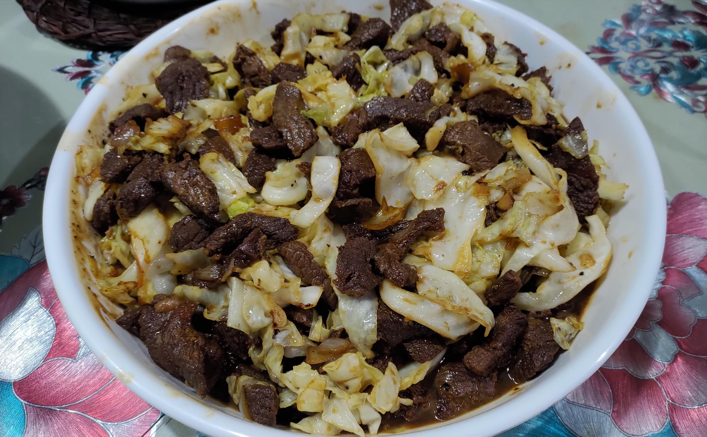
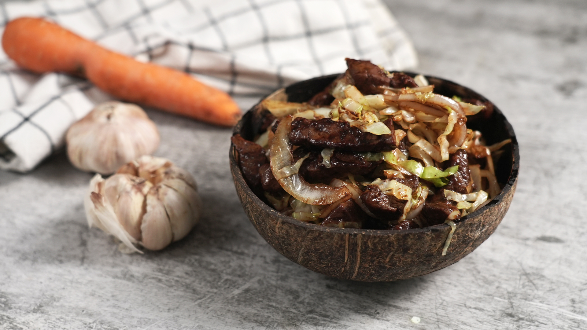

Pigar-Pigar is a Filipino street food dish originating from Dagupan in the Philippines. It features thinly sliced beef, carabao meat, or liver that is quickly fried with onions and cabbage, served with rice or beer. It is a signature nighttime street fare and a point of local pride in Pangasinan cuisine.
Fun Facts
- The name comes from the sizzling “pigar” sound while cooking
- Usually eaten with bare hands
- Best enjoyed late at night
Origins

Pigar-Pigar began in Dagupan City’s street markets in the late 20th century as an affordable, flavorful meal for workers and nighttime crowds. Vendors used thin beef or carabao slices to make a quick, filling dish. The name comes from the Pangasinan term meaning “to turn over” or “to flip,” describing the cooking motion used when frying the meat.
Preparation and Flavor

The dish is prepared by quickly pan-frying the meat until crisp on the edges, then tossing it with onions and cabbage. It is seasoned simply with salt and pepper, allowing the natural savoriness of the meat to shine. The result is a balance of textures—crisp exterior, tender interior, and soft vegetables—usually paired with calamansi and soy or vinegar dipping sauce.
Cultural Significance
Pigar-Pigar has become a defining symbol of Dagupan’s street food culture. It is celebrated annually at the Pigar-Pigar Festival, which features cooking contests and food stalls. The dish reflects the city’s communal, late-night dining scene and embodies the resourcefulness of Pangasinan’s culinary traditions, combining simplicity, affordability, and robust flavor.
In Dagupan, pigar-pigar stalls come alive at night. Friends gather, share a plate, and eat together—no utensils needed. It’s less about the food and more about bonding over a simple, delicious meal.